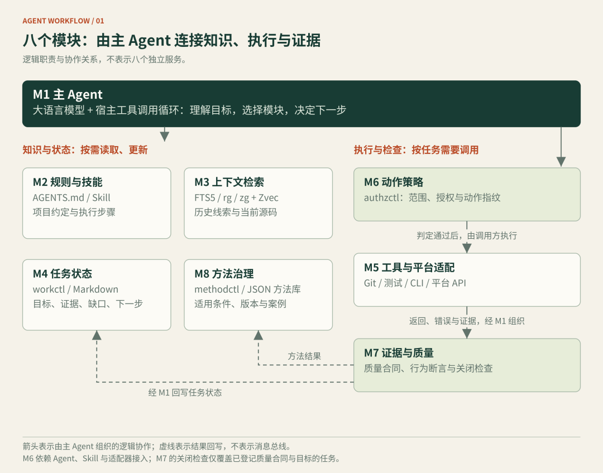
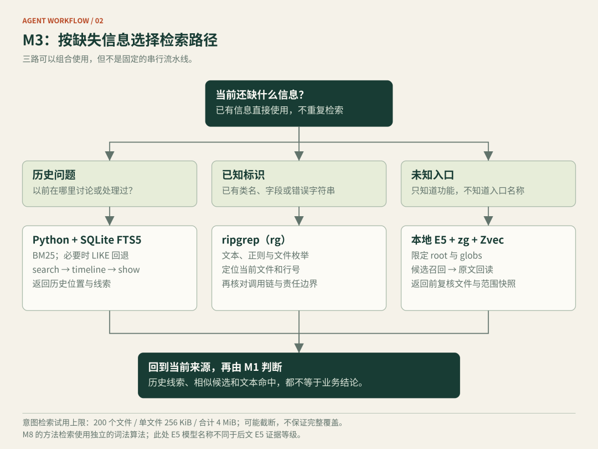
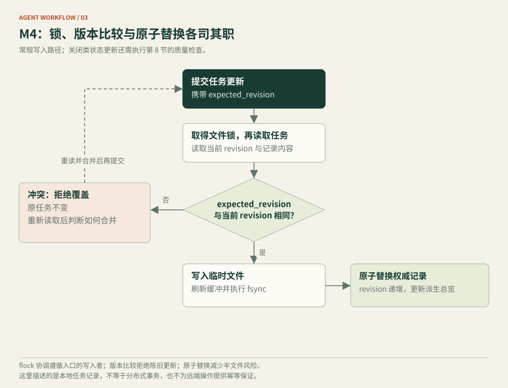
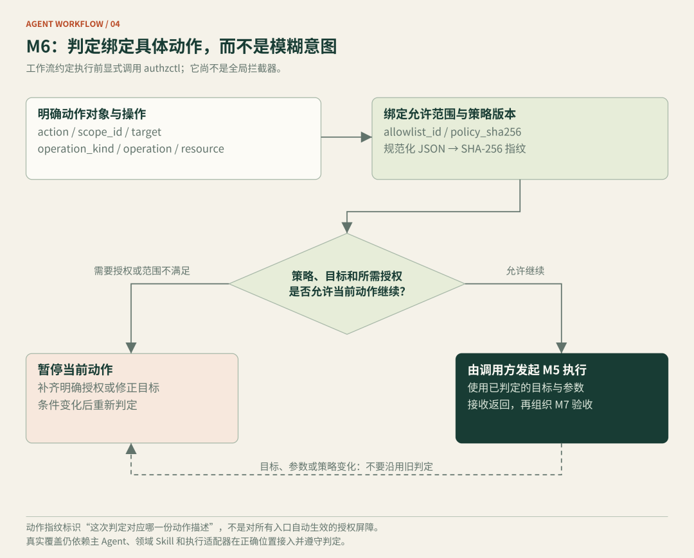
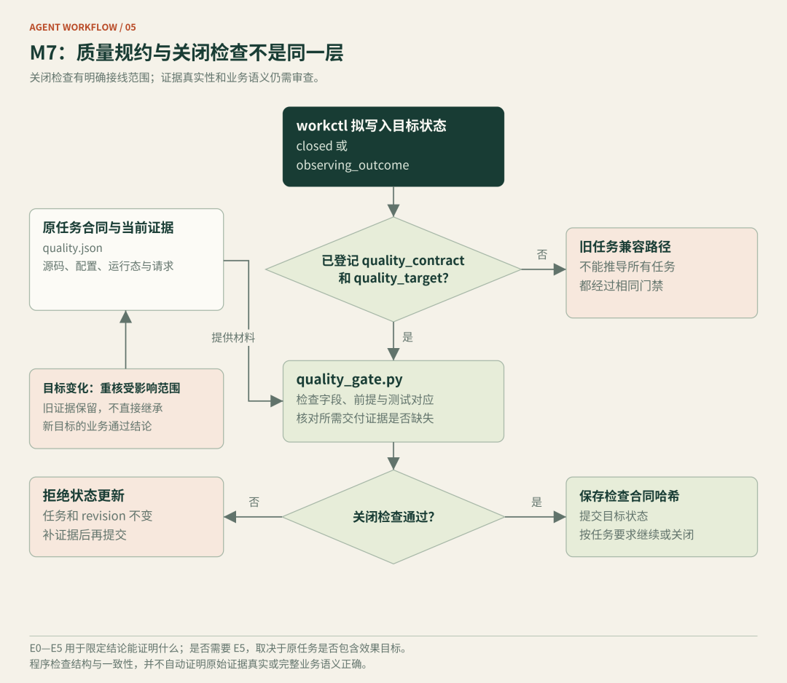
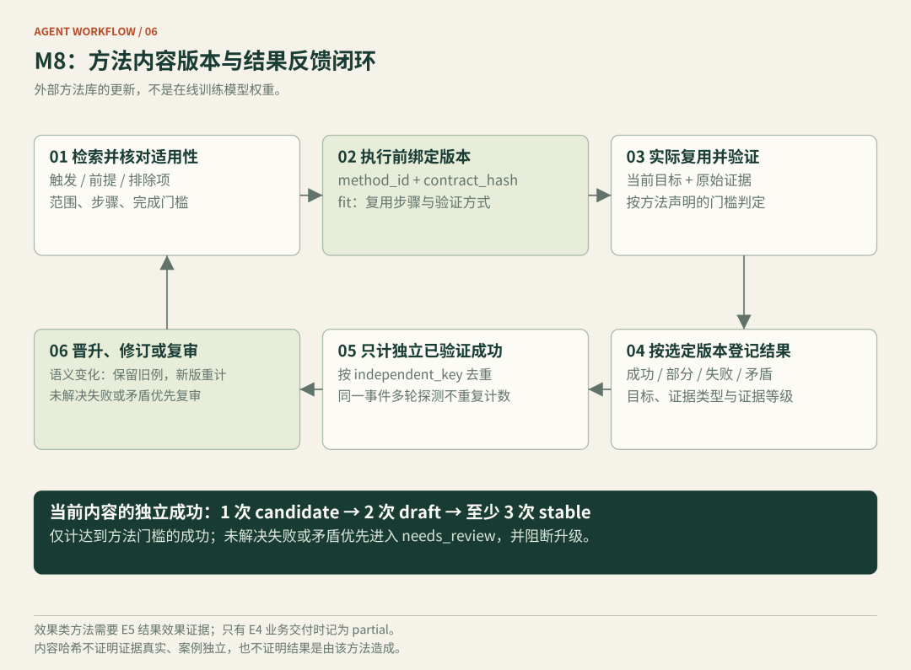
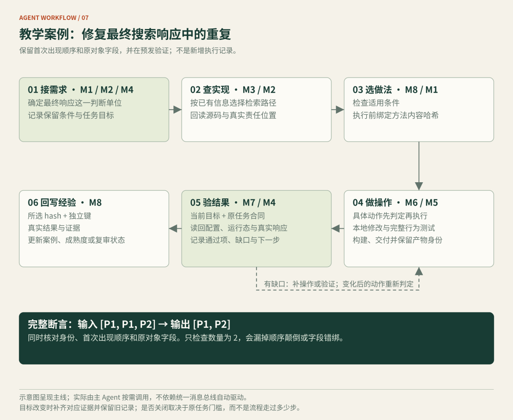

Agent 研发工作系统：面向多需求并行端到端开发的设计与实践
让 Agent 完成一次修改，还要回答三个问题：工作如何续接，结果如何验收，经验如何复用。
“修复搜索结果重复，并在预发验证。”
以这个需求场景为例，看似只是一次代码修改，实际却有一串问题需要回答：去重发生在最终响应，还是上游候选池？原有顺序和字段是否保留？本地测试通过后，预发运行的是否正是这次修改对应的镜像？换一个会话继续处理，又该从哪里接着做？
这些问题不能只靠一次工具调用回答。它们要求系统保留任务状态、明确动作范围，并把测试和运行结果对应到具体的完成条件。
这套系统围绕这些要求展开：主 Agent 负责理解目标、组织工具调用；规则与检索提供上下文；任务记录保存进度；动作策略约束执行；质量检查判断是否完成；方法库记录哪些做法在什么条件下得到过验证。
下面先看整体结构，再逐步展开实现。搜索去重的例子会贯穿其中，并在第 10 节串成完整流程。
**
一、全貌：八个模块，分别解决什么问题
**
系统划分为 M1—M8 八个模块，但它们是逻辑职责，而不是八个独立微服务。实现以本地文件、SQLite、Python 和 Node.js CLI 为主，由具备工具调用能力的大语言模型组织协作。

图 1：主 Agent 连接知识、状态、执行与验收；状态和方法反馈也由它组织回写
| 模块 | 解决的问题 |
|---|---|
| M1 主 Agent | 当前目标是什么，下一步该查什么、做什么？ |
| M2 规则与技能 | 这个项目有哪些约定，这类操作应该怎样执行？ |
| M3 上下文检索 | 历史线索和当前源码在哪里，怎样回到原文？ |
| M4 任务状态 | 工作做到哪了，跨会话和并发更新时如何续接？ |
| M5 工具与平台适配 | 怎样把操作落实到仓库、测试和企业平台？ |
| M6 动作策略 | 对这个具体目标执行这项操作，是否符合范围与授权？ |
| M7 证据与质量 | 已有结果能证明什么，还缺什么才能完成？ |
| M8 方法治理 | 哪些经验可以复用，方法改版后如何重新验证？ |
这些模块不是必须逐个经过的流水线。主 Agent 按需读取 M2、M3、M4、M8，组织策略检查、工具执行和验收，再将进度写回 M4，将实际复用结果写回 M8。
**
二、M1 主 Agent：理解目标，再组织工具调用
**
“修复重复搜索结果”并没有直接告诉系统应该修改哪里。
最终响应重复、上游候选池重复、某个展示模块重复，可能对应不同的责任位置。主 Agent 首先要理解用户要求解决的是哪一层问题，然后决定读哪个仓库、查哪条调用链、采用什么验证方式。
检索器可以返回匹配的源码，状态程序可以保存当前进度，但它们不会替代这层业务判断。
M1 的执行方式是一个工具调用循环：
- - - - - - - - -
读取用户目标与当前状态
↓
选择需要的信息或执行工具
↓
构造参数并调用工具
↓
读取结果、错误和证据
↓
继续 / 修正 / 等待 / 验收规划、实现和评价可以由同一个主 Agent 顺序完成。只有任务存在独立工作边界，且引入独立角色已获授权时，才安排其他执行者或审阅者。角色名称本身不构成独立审查保证。
跨模块编排目前主要发生在这套工具调用循环中，还没有一个统一的后台工作流服务自动推进所有步骤。
**
三、M2 规则与技能：把项目知识和操作流程分开
**
M2 回答两个问题：这个项目怎么工作，这类操作怎么执行。
这两类知识有关联，但不应该混在一起。交付流程可以复用，应用名、目标分支、实例组等项目参数则需要分别维护。
因此，操作知识被组织为三个层次：
- - - - - - - - -
全局约定 / 项目 AGENTS.md
一般规则、项目边界、验证方式
项目技术地图
入口、模块职责、调用链、常用命令
Skill 目录
SKILL.md 用途、触发条件、操作步骤
scripts/ 可执行程序
references/ 参数、模板、复杂流程细节
assets/ 操作需要的资源例如，交付 Skill 说明怎样选择仓库执行合同、调用构建接口、读取产物和运行探针；合同提供该项目的具体参数与执行要求。这样，调整应用参数不必重写通用流程，更新流程也不必把所有项目细节重新组织一遍。
加载同样按需进行：先识别资源用途，适用时读取正文，执行时再展开必要引用。这与 Agent Skills 的元信息发现、正文激活和资源按需加载方式相对应。
M2 负责组织规则与操作资源；一套做法是否适用、被验证过几次、修改后是否仍然可靠，则交给 M8 管理。
**
四、M3 上下文检索：按缺失的信息选择路径
**
查历史讨论、找已知字段、定位一个只知道功能的入口，是三种不同的问题。M3 为它们保留了三条检索路径，而不是把所有查询都交给向量检索。

图 2：先判断缺什么信息，再选择检索方式；找到候选后，仍需回到当前来源复核
4.1 查历史：Python + SQLite FTS5
需要回答“以前在哪里讨论或处理过”时，使用历史检索。
Python 导入器读取追加式会话记录，将消息和整理摘要写入本地 SQLite。它保存源文件的字节偏移，下次从该位置继续；末尾尚未写完整的一行留待后续处理。每条记录保留项目、会话、时间、来源文件和偏移，便于定位原文。
查询使用 FTS5 与 BM25，并支持按项目等范围筛选。短查询或全文检索异常时，提供 LIKE 回退。使用顺序是：先用 search 找候选，再用 timeline 看邻近上下文，最后用 show 读取原文。
这里有两个限制需要记住：热索引会跳过工具大载荷，因此无命中不代表当时没有执行过；历史记录也不能证明今天的分支、配置或运行状态，当前事实仍要从当前来源读取。
4.2 找已知标识：ripgrep
已经知道类名、字段、错误字符串或配置 key 时，直接使用 rg 做文本、正则或文件枚举。
例如查 expected_revision，先找到定义和调用方，比重新描述它的功能再做语义检索更直接。匹配到文件和行号后，再检查调用链，确认它是否处于当前问题的责任范围内。
4.3 找未知入口：Node.js + 本地模型 + Zvec
只知道功能、不知道入口名称时，使用 semantic-context.mjs。这条路径的实现如下：
- - - - - - - - - - - -
明确 root 与正向 globs（纳入检索的文件模式）
↓
枚举文件，记录文件哈希与范围快照
↓
zg 0.2.1 抽取文本片段，按范围增量刷新
↓
Transformers.js 加载本地 ONNX 模型
multilingual-e5-small / 384 维 / CPU
↓
Zvec 向量索引，zg context 返回候选
↓
回读原始源码行，复核范围快照zg 支持组合词法与向量候选。本地适配器调用其公共索引和 context API，固定使用本地模型，关闭远端下载与网络回退，没有另建远端向量服务。索引按规范化目录、文件模式和模型隔离，放在源码目录之外，可以重建。
这条路径不只返回相似片段，还保留三类信息：定位原文的 path、startLine、endLine；标识来源的 sha256、sourceSnapshot；说明匹配与截断情况的 matchedBy、contentTruncated。
返回前会再次检查文件新增、删除和内容变化，避免将已经漂移的快照当作有效结果。不过，模型输入和输出片段都可能截断，候选仍不能证明完整覆盖。
该适配路径目前处于有界试用：最多 200 个文件、单文件 256 KiB、合计 4 MiB，超限就缩小范围。这些是本地试用限制，不是底层工具的通用上限；也没有后台全盘扫描或每次任务必跑的要求。
已有信息直接使用，缺失信息才检索。可复用方法的检索属于 M8，不与这里的源码索引混用。另外，这里的 E5 是嵌入模型名称，与第 8 节的 E5 证据等级无关。
**
五、M4 任务状态：既能续接，也能防止旧进度覆盖新进度
**
跨会话继续工作，最需要恢复的不是全部聊天，而是四件事：目标是什么，已经确认什么，还缺什么证据，下一步做什么。
workctl.py 将这些信息保存在 tasks/*.md 中。任务文件是权威记录：结构化头部保存 task_id、revision、status、owner 和更新时间，正文记录目标、证据、缺口、阻塞与下一步。总览由程序生成。
下面是字段与内容示意，不是完整任务文件格式：
- - - - - - -
task_id: task-…
revision: 7
status: validating
目标: 修复最终响应重复并完成预发验证
已确认: 本地完整输出与保留条件通过
待证明: 当前预发镜像处理固定请求的结果
下一步: 读回实例，再发业务探针保存状态还要处理另一个问题：两个更新者都拿着旧进度，怎么办？
假设 A、B 都读到 revision = 7。A 先提交，任务变为版本 8；B 随后仍携带 expected_revision = 7 提交，就会被拒绝。B 必须重读最新记录，再判断如何合并自己的更新。
文件锁协调写入过程，版本检查防止旧状态覆盖新状态。 两者解决的问题不同。

图 3：持锁读取、比较版本，再写入新状态；发生冲突时保留原记录，由更新者重读
具体写入顺序是：取得 flock 文件锁，读取任务并比较 expected_revision，写临时文件，执行 flush / fsync，原子替换，再更新派生总览。原子替换用于减少半文件风险；这些机制限于本地记录，不提供分布式事务或远端动作幂等保证。
恢复工作时，Agent 先核对目标是否变化，再从缺口继续；需要历史线索时调用 M3。后续执行可以由用户继续对话或已配置的定时任务触发，但调度配置和实际运行结果要分别核验，触发过不等于业务已完成。
5.1 需求卡：把多次任务串成一个需求
任务卡记录一次工作的进度，但一个需求可能跨多个任务、会话、项目或 Agent。
2026-09-17 增加的 reqctl.py 用需求卡补上这一层。权威记录是 requirements/req-*.md，集中关联以下对象：
- - - - - - - - -
任务卡 哪些任务在推进这个需求
会话 哪些宿主、Agent 和会话参与过
功能模块 pending → in_progress → done → verified
开发分支 哪个分支完成了哪些模块
问题记录 open → resolved / workaround，附解决方式
方法 复用的方法及内容版本哈希
证据与文档 证据引用、参考文档
阶段推进 discovering → developing → validating
→ delivering → observing → closed续接时，先从需求卡找到相关任务、分支和问题，再读取具体记录继续工作。需求卡与任务卡使用同一套文件锁、乐观版本检查和原子写协议；都通过程序更新，派生索引只读。
**
六、M5 工具与平台适配：把操作落实到真实系统
**
理解了目标，也保存了状态，接下来要真正修改代码、构建产物、部署和验证。M5 负责把这些动作连接到本地仓库、测试工具和企业平台。
典型调用链如下：
- - - - - - - - -
主 Agent / 领域 Skill
↓
交付驱动：组合 Git、构建、部署、验证步骤
↓
Python 操作封装：已覆盖的平台原子操作
↓
manifest 固定的 Node.js 命令行工具
↓
平台适配器与标准通信接口项目路由选择仓库与交付驱动，仓库执行合同提供应用、分支、commit、实例组、镜像、探针 ID、查询范围和结果约束等参数。
这里还要保证：检查的入口，就是实际运行的入口。 因此，运行包、入口及 adapter 通过运行清单（manifest）和 SHA-256 固定，并在执行链路中读回核对。
| 工作类别 | 工具与平台路径 | 返回的能力与材料 |
|---|---|---|
| 代码与交付 | Git、交付驱动、交付平台 | 分支操作、构建、产物身份与预发交付 |
| 运行与业务验证 | 日志平台、配置中心、业务验证平台 | 配置与运行态读回、业务探针、原始响应 |
| 数据与实验 | 数据平台、实验平台等入口 | 有范围的查询、实验操作与返回核验 |
| 扩展能力发现 | 能力目录与应用元数据路径 | 能力 schema 发现与具体接口选择 |
各适配器按实际验证范围声明能力。能力发现不代表每项操作都已验收，每个入口也保留自己的参数与范围检查。
M5 返回结构化结果、错误、产物身份和原始证据。工作流在动作前接入 M6，在执行后交给 M7 验收。遇到超时或响应丢失，先读回远端状态，再决定是否重试，而不是默认再执行一次。
**
七、M6 动作策略：能调用工具，不等于有权执行动作
**
主机允许执行 Bash，并不等于某次部署、删除或外发消息已经获得业务授权。
M6 检查的是具体动作。任务范围内、环境明确、可恢复的非生产操作，在满足策略的正向目标 schema（允许的目标结构）和操作合同后可以继续。生产或环境未知的变更、破坏性操作、权限与凭据变化、外发消息、支付等，则需要针对相应动作的明确授权。
7.1 用指纹绑定具体动作
authzctl 接收动作类型、稳定范围 ID、精确目标和操作，依据 JSON 策略返回 decision、reason 和动作指纹。
指纹的计算方式如下。这里是示意，不是可直接运行的完整 Python 程序：
- - - - - - - - - - -
contract = {
"action": action,
"scope_id": scope_id,
"target": target,
"operation_kind": operation_kind,
"operation": operation,
"resource": resource,
"allowlist_id": allowlist_id,
"policy_sha256": policy_sha256,
}
fingerprint = sha256(canonical_json(contract))规范化 JSON 固定键顺序和分隔形式，使同一动作描述得到稳定指纹。目标、参数或策略变化，指纹也随之变化。
例如，合并产生新 commit 后，构建与部署必须绑定新对象，不能沿用一个没有明确对象的“发布一下”。指纹用于绑定动作描述，授权仍需经过相应策略和用户确认流程。

图 4：策略判定绑定具体动作；目标、参数或策略变化后重新判断
图示为策略与执行关系，不表示所有工具类型都已接入拦截。
7.2 从显式调用，到宿主执行前拦截
早期，动作策略依赖工作流在执行前显式调用。后续通过宿主的执行前钩子接入检查，对纳入策略的命令采用 fail-closed 方式：未满足放行条件时，不予执行。
在已接入策略的执行入口中，需要明确授权的命令，须完成相应判定和授权后才能继续。
被拦命令需要先经策略判定，取得用户对精确动作、目标与操作的显式授权，再登记授权记录。授权记录与命令及动作指纹绑定；实际操作变化后，需要重新判定并取得相应授权。
7.3 一次误拦截：连记录问题的命令也被挡住了
接线验证暴露了一个实际缺陷：拦截器先挡住了包含危险操作描述的验证命令，接着又挡住了“把这条被拦命令记入需求卡”的记录命令。
原因是，记录命令的参数也包含相同文本。描述危险操作的文字触发了检查，导致授权与记录路径被一起堵住。
修复针对记录与授权路径设置了受限的处理规则，并补充相关执行检查。问题和修复结果一并登记到需求卡。这个案例说明，拦截设计需要区分实际执行的操作与用于描述操作的普通文本。
覆盖边界： 策略的有效范围取决于各执行入口的实际接入和验证。分类测试通过，不能证明所有执行路径均已覆盖，仍需逐入口核验。
**
八、M7 证据与质量：执行过了，怎样证明完成了
**
代码测试通过，只能回答相应测试是否通过。它没有直接回答：预发运行的是什么镜像，用了什么配置，实际业务请求是否正确。
M7 将执行材料与任务要求对应起来，区分“已经做过什么”和“已经证明什么”。
8.1 用 E0—E5 界定结论能说到哪一步
这套系统使用以下证据等级：
| 等级 | 要回答的问题 | 典型材料 |
|---|---|---|
| E0 观察 | 出现了什么症状？ | 用户反馈、历史记录、未验证观察 |
| E1 代码 | 当前源码或本地产物有什么行为？ | 源码、差异、完整行为测试、本地产物 |
| E2 配置与数据 | 实际选择了什么配置和数据？ | 实验分配、配置读回、索引、缓存、数据集 |
| E3 运行态 | 当前运行的到底是什么？ | 不可变产物、实例和 Provider 绑定 |
| E4 业务验收 | 当前目标处理真实业务请求是否正确？ | 完整字段、内容、顺序断言及相关负例 |
| E5 结果效果 | 性能、可靠性、成本或业务是否改善？ | 预定义指标、人群、窗口、基线或对照 |
并非所有任务都必须达到 E5。文档修改可以用本地证据验收；预发交付要核验相应目标的业务行为；要求效果改善的任务，才需要对应的效果证据。
证据还必须绑定目标。镜像 A 的业务验证通过，不能直接替镜像 B 背书。目标变化后，旧记录保留，但受影响的配置、运行态和请求需要重新核验。请求模式、调用方、数据和时效，也会影响证据能否复用。
8.2 把验收要求接入任务关闭入口
quality.json 保存质量合同：原始需求、责任边界、最小必要设计、假设、目标、行为测试与交付检查。
quality_gate.py 检查字段是否齐全，是否还存在未经验证的实现前提，测试是否对应目标，以及缺不缺任务范围要求的交付证据。
对登记了quality_contract 和quality_target 的任务，workctl 在写入 closed 或 observing_outcome 前调用关闭检查。检查失败，任务与 revision 不变；通过后，保存检查合同哈希，并允许对应状态更新。

图 5：已登记任务进入关闭检查；失败保留原状态，未登记旧任务仍走兼容路径
证据等级是验收规约，程序门禁是可执行检查，两者不能混为一谈。未登记的旧任务仍走兼容路径；程序检查结构和一致性，也不能替代对原始证据真实性及业务语义的审查。
8.3 效果指标要在看结果之前定义
要求 E5 时，需要提前写清指标公式、观察人群、完整窗口、数据来源、基线或对照、负责人、停止条件和因果限制。
不能先挑一段好看的结果，再反过来定义成功。业务请求通过与效果改善，是两个不同的结论。
**
九、M8 方法治理：经验可以复用，成功记录不能随意继承
**
方法库不只要保存“以前怎么做”，还要回答：这次是否适用，执行的是哪个版本，成功是否经过验证，是否存在反例。
methodctl.py 管理这类记录。权威数据是 library/*.json，methods/*.md 是阅读视图，registry 与 INDEX 是派生索引。一条方法包含四组信息：
- - - -
适用性：trigger / scope / prerequisites / exclusions
执行：decision / procedure / 每步 action、check、stop_if
验收：outcome_class / outcome / closure_gate / safety_boundaries
反馈：evidence / cases / status / revision这里的“学习”发生在外部方法库、工作上下文和执行约束中，不涉及在线训练模型权重。检索影响下一次做法选择，执行反馈再改变方法的成熟度和适用条件。
9.1 先找到候选，再判断能否采用
M8 使用词法匹配，与 M3 的源码向量检索分开。英文和标识符提取 token，连续中文按相邻双字切分；再与方法的标题、摘要、领域、触发条件、目标、范围和关键词匹配。
评分规则为：
- - -
coverage = 命中的查询 token 数 / 查询 token 总数
score = 10 × coverage + maturity_bonus
stable = 4，draft = 3，candidate = 2，needs_review = 1检索先按领域和状态过滤，零命中不返回，再按分数和标题排序。--explain 返回匹配词、内容版本、触发条件、前提、排除项和门槛，供主 Agent 判断。
相关只代表值得检查，不代表可以直接采用。是否满足方法前提，仍要结合当前任务判断。
9.2 方法改了，旧成功为什么不能继续计数
一个反例测试很好地说明了这个问题：旧版本已经成功三次，新版本只成功一次，旧实现却仍将方法判为 stable。
修正后，新版本被判为 candidate，四条历史记录全部保留。改变旧案例的独立键，也不能绕过内容版本匹配。
要得到这个结果，方法选择、执行和反馈必须连在一起。
- 选择时绑定版本。
contract_hash对触发条件、前提、范围、步骤、排除项、完成门槛和安全边界等语义字段计算 SHA-256。执行前保存method_id + contract_hash + fit，说明准备复用哪一步、怎样验证。关键词、摘要、记账时间等元信息与内容身份分开。
- 反馈时绑定实际结果。 登记成功、部分、失败或矛盾，以及目标、证据类型和等级。结果对应执行前选定的版本，不能事后拿当前哈希给旧经历补签。
- 计数时区分独立性。
independent_key区分独立任务。同一事件的多轮探测、修复重试和不同阶段，不能拆成多次独立成功。
- 语义修订后重新累计。 旧案例继续保留，但不能抬高新版成熟度；未解决的失败或矛盾阻断升级。

图 6：先绑定版本，再执行验证与反馈；案例按内容版本和独立任务计数
当前项目的规则是：同一内容版本一次独立已验证成功为 candidate，两次为 draft，至少三次且无未解决失败或矛盾为 stable；出现失败或矛盾，优先进入 needs_review。
成功还必须达到方法声明的门槛。效果类方法要求 E5，只有 E4 交付证据时记为 partial，不能作为该方法的一次完整成功。
旧库未绑定案例仍有兼容路径，但语义修订后不能借这些记录提升新版成熟度。内容哈希也不能证明证据真实、独立键确实独立，或整体成功由这条方法造成。
**
十、完整运行：一次搜索去重请求怎样走完
**
回到开头的教学案例：修复最终搜索响应中的重复，保留首次出现顺序和原对象字段，并在预发验证。 以下用于说明模块协作，不是一条新增的实际执行记录。

图 7：从目标澄清到业务验收，再到状态和方法反馈；实际步骤由主 Agent 按需组织
- 先明确目标。 M1 与 M2 确认问题位于最终响应，并写清顺序、字段等保留条件。M4 建立任务记录；涉及多次任务时，再通过需求卡聚合。
- 再找责任位置。知字段或错误时用 rg；只知道功能时用意图检索；需要了解旧处理过程时查历史。M3 返回候选后，仍要读取当前源码与调用链。
- 选择可复用方法。 M8 提供相关做法，M1 检查前提和排除项。决定采用后，先绑定方法 ID、内容哈希及验证计划，再执行。
- 修改并交付。 按动作范围接入 M6 判定，由 M5 完成代码修改、测试、构建和交付。产物身份与平台返回要保留；合并等操作改变了 commit，后续目标也随之更新。
验证完整业务行为。 对下面的输入，验收不能只检查结果数量：
- - -
输入：[P1, P1, P2]
预期：[P1, P2]
要检查：身份是否正确、是否保留首次顺序、对象字段是否保留。只断言“数量等于 2”，会漏掉 [P2, P1] 或标题错绑。先验证本地完整行为，再核对预发配置、运行目标和相应业务请求，由 M7 判断是否满足原要求。目标变了，就补充受影响的证据。
- 最后回写进度与方法结果。 未完成的缺口和下一步写入 M4；满足条件后，通过相应关闭检查更新状态。实际复用的方法，再按选定版本、独立键和证据反馈到 M8，失败与部分成功也要保留。
这条链路依靠主 Agent 的工具调用、任务记录和证据引用衔接，不由统一消息总线自动驱动。模型负责语义判断，对应程序执行可计算的约束。
**
十一、对工作带来的作用：看得到哪些产物
**
这套系统的作用，可以从三类可核对的产物来看。
- 续接工作，有明确入口。历史检索保留原始线索，任务卡保存目标和缺口，需求卡关联任务、会话、模块、分支和问题。进入陌生代码时，还有项目技术地图、当前文件和责任链可查。
- 执行与验收，有对应材料。预发交付保留产物身份、配置与运行态读回、业务响应；动作有范围判定，完成有对应检查，不只留下一个“执行成功”。
- 复用经验，有版本与反例。方法有适用步骤、内容合同和验证案例。不再适用的做法进入复审，修订保留旧记录，新版重新验证。
这些机制提供了工作支撑，但不能仅凭模块存在或局部测试，就推导总体节省了多少工时、长期准确率提高了多少。效率和效果仍需要在真实任务中持续测量。
**
十二、技术特色与已有方案的关系
**
这套系统复用了乐观并发、内容哈希、显式合同、分层验收和可追踪反馈等工程思想。它的重点不在于替代某个框架，而是把这些机制接到具体研发对象和执行入口上。
12.1 与已有机制如何组合
下表比较能力所在层次，不作功能排名，也不代表完成了同条件性能基准。
| 方案或机制 | 参考能力 | 本系统侧重的组合方式 |
|---|---|---|
| Agent Skills | 标准目录封装知识、脚本与资源，按需加载 | 在资源组织之外，管理方法适用条件、版本与验证案例 |
| LangGraph Persistence | checkpointer 保存线程内图状态，store 保存跨线程数据 | 状态持久化之外，定义环境、产物、配置和请求的验收身份 |
| Temporal Workflow | 事件历史与重放恢复工作流 | 执行恢复之外，由领域合同定义业务证据与完成条件 |
| LangSmith Evaluation | 数据集、评估器、离线与在线评测，失败回流测试 | 在评测之外，跟踪跨任务方法的内容版本、独立性与反例 |
| Claude Code Hooks | 工具调用前允许、拒绝或请求用户决定 | 承载动作策略；本文描述的是已接线宿主中的 Bash 命令级检查 |
这些机制能够扩展和组合，表中区分的是关注点，而不是它们无法实现哪些功能。
12.2 三个贯穿全篇的设计选择
第一，把目标身份贯穿验收。源码、commit、配置、镜像、请求和证据需要对应起来。目标变化，不直接复用旧目标的通过结论。
第二，把方法反馈绑定到执行时的版本。先选版本，后记结果；语义变化重新累计，失败和矛盾不能被成功次数淹没。
第三，把可计算的规则接入实际入口。版本冲突检查进入状态写入流程，质量检查进入已登记任务的关闭流程，Bash 策略进入已接线宿主的执行前钩子。能由程序检查的约束，不只依赖 Agent 记住一段文字。
12.3 还需要继续验证什么
后续仍需扩大 API 与部署适配器级的策略覆盖，核验不同宿主的实际接线，并持续观察长期效果和跨团队迁移情况。
内部指令精简另有独立实验，本文未展开相应材料，因此不将其作为这里的效果证据。这些设计也不构成算法首创或全面领先的证明。
回到最初的问题：完成一次代码修改之后，系统是否还能说明做到哪了、运行的是什么、凭什么验收，以及这次经验能否在下次使用？
这正是八个模块协作的目标：主 Agent 组织工作，规则与检索提供上下文，状态承接进度，工具落实操作，策略约束动作，质量对应证据，方法治理记录经过验证的做法。
推荐阅读
从AI写代码到AI重构交付——国际物流技术 Multi AI Native 的 AI 交付转型之路
全栈 AI Agent 从 0 到 1 ：智能播客平台开发全记录
人和Agent怎么一起干活？---复制粘贴的进化之路，先装个贾维斯吧
关注我们